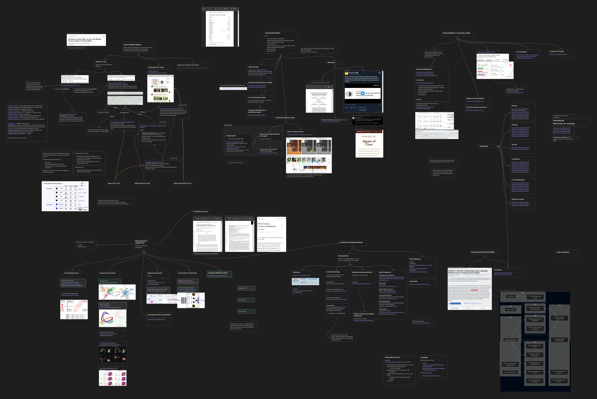

The Future of Mech Interp: 7 Gaps I Think Matter
I dumped a bunch of papers, ideas, and half-formed research questions into one giant Obsidian canvas and then zoomed out. The result is this post: seven areas where mechanistic interpretability still feels pretty underexplored, plus a few side paths that keep nagging at me.
The Picture First
The whole post is really just a cleaned-up walk through this map. The notes came from an Obsidian canvas, and the big screenshot is the full 4K version of that canvas. It is messy, a bit obsessive, and honestly probably the best summary of what has been bouncing around in my head lately.

Why I Made This Map
Mechanistic interpretability is starting to feel a lot bigger than “look at neuron, find feature, steer feature.” That part is still useful, but the field is branching into agent auditing, reasoning traces, evaluation pipelines, long-horizon oversight, and bigger questions about what the right object of study even is.
And that is the key thing that kept showing up on the canvas: there are plenty of papers, but the field still has some pretty obvious gaps. Not gaps in the sense of “nobody has ever said these words before,” but gaps in the sense of “this seems important, and we still do not have a satisfying research program for it.”
So here is my current version of the list.
1. Interpretability Agents Are Still Barely Agents
There is a lot of energy around “interpretability agents” right now, but if you stare at the actual systems, many of them still look more like evaluation pipelines, LLM-query systems, or tool wrappers than true agents that do interpretability.
That is not a criticism. It is just where the field is. Neuron explanation systems, AutoInterp-style setups, observability interfaces, and newer auditing stacks are useful. But a lot of current work is still closer to “agents for evaluation” than “agents that autonomously reason through an interpretability problem.”
To me, a real interpretability agent would need to do a few things that are still mostly missing:
- choose tools on its own rather than follow a fixed script
- notice when an experiment failed and loop back
- repeat or refine an experiment when the evidence is weak
- reason over circuits or larger computation graphs, not just isolated features
That is a very different bar. And it also creates an awkward evaluation problem: how do you evaluate the whole system, not just one tool output inside it?
2. Interpreting Agents Is a Different Problem, and We Have Not Really Faced It Yet
Separate from building agents for mech interp, there is the reverse problem: doing mech interp on agents.
This feels underexplored in a very obvious way. Most current MI work still assumes something like one model call, one prompt, one generation, maybe one tool call. But real agents are long-horizon. They act, observe, plan, revise, use tools, sometimes coordinate with other agents, and sometimes drift.
A few gaps here jump out immediately:
- multi-agent interpretability and safety
- long-horizon behavior rather than one-shot generations
- the belief-action gap
- goal drift across time
- actual circuits of agents rather than circuits inside one forward pass
One concrete motivating example from the canvas was something like a multi-agent game of Diplomacy or Mafia. Agents might lie, bluff, coordinate, or manipulate. The obvious question is: can we monitor internals and catch that behavior before it only shows up in the transcript?
There is also a representation-behavior gap here that I think is extremely important. A model may internally know which tool to call, or what the right action is, but the final behavior still fails. Internal competence does not automatically cash out as correct external action.
3. Representation Engineering Is Still Wide Open
This might be the central unresolved question under almost everything else: what is the right unit for observation?
Neurons? Sparse features? Geometric objects? Manifolds? Learned concept modules? Some diffusion-like latent space? Query-based systems like activation oracles instead of a single frozen representation?
The reason I keep coming back to this is simple: the field still does not know which representation is actually best. And the recent paper churn makes that painfully obvious. People are trying neuron-based approaches, geometric perspectives, sparse autoencoder fixes, interpretable architectures, activation diffusion ideas, and matrix-factorization alternatives all at once.
That is exciting, but it also means the foundation is still moving.
So when someone says “we found the feature” or “this is the clean unit,” I increasingly read that as “this was a useful representation for this experiment,” not “the representation problem is solved.”
4. Evaluation Is Still Behind the Methods
If the right representation is unclear, then evaluation becomes even more important. And right now evaluation still feels patchy.
There are now plenty of benchmark-shaped things around: feature benchmarks, steering benchmarks, causal benchmarks, contrastive evaluation, multilingual steering evaluation, function-description benchmarks, safety-focused steering checks, and model-organism style testbeds.
That is good progress. But the field still does not have a clean answer to basic questions like:
- what exactly counts as an interpretable feature?
- how do you compare two interpretability methods that expose different kinds of objects?
- how much should we care about human legibility versus causal usefulness?
- what downstream behaviors should steering or auditing methods actually be tested on?
I also think model organisms deserve a bigger role here. If you want to know whether an interpretability method is actually finding something real, hidden-behavior models, sleeper setups, taboo tasks, or blind auditing games seem way better than just admiring a few nice-looking examples.
There is even an applied version of this that I kind of love, and it is still just an idea on my side for now: an “antivirus for LLMs” where a model gets uploaded somewhere, automatically audited, and then gets a safety report card. I will probably write about that one separately at some point.
5. Reasoning-Model Interpretability Looks Like Its Own Field Now
At this point, reasoning-model interpretability barely feels like a side branch. It feels like a research area in its own right.
What makes it tricky is that the object of study is no longer static. You are not just asking what a feature means at one layer. You are asking whether a whole reasoning trace is faithful, whether hidden states evolve in meaningful ways over time, whether the chain of thought is actually connected to the computation, and whether long-horizon reasoning can be monitored before something goes off the rails.
The taxonomy on the canvas was actually pretty clean here. A lot of current work seems to fall into buckets like:
- discovery
- steering
- circuits
- localization
- CoT unfaithfulness
- implicit reasoning
The part I think is still underexplored is the temporal side. Not just “what feature fired,” but how hidden trajectories evolve across steps, whether the model is clean in the short term but planning something bad in the long term, and whether we can build monitorability tools for extended reasoning rather than single-step snapshots.
6. Developmental Interpretability Still Feels Weirdly Undersized
This one is a bit different because the gap is not that nobody knows the area exists. It is more that it still feels smaller than it should be.
Developmental interpretability asks how mechanisms form over training. That seems like a huge question if you care about where behaviors come from, when deception-like structure appears, whether certain circuits emerge gradually or suddenly, or how model size and training stage change what is even available to interpret.
Pythia and checkpoint-based work opened the door here, but it still feels like the area has not expanded as much as it could. There is a lot more to do around feature birth, circuit formation, behavioral phase changes, and training-time diagnostics that connect nicely to the rest of mech interp.
If you care about prevention rather than post-hoc explanation, developmental interpretability should probably matter more than it currently does.
7. Causality Still Sits in the Background Like the Serious Adult in the Room
A lot of mech interp work still lives in a slightly awkward zone between useful heuristics and strong claims. We probe, cluster, inspect, steer, and then try not to overclaim.
That is exactly why the causality branch matters so much. If probing and representation work are the baby methods, causality is the more serious foundation underneath them. It gives the field a cleaner language for talking about interventions, counterfactuals, and whether a mechanistic story is actually doing explanatory work rather than just sounding good.
I do not think every MI paper needs to become pure causal theory. But I do think the field will keep running into the same ceiling unless causal framing becomes more central, especially once claims get bigger and systems get more agentic.
A Few Bonus Gaps That Keep Sneaking Back In
Even after forcing myself into a seven-item list, there were a few extra themes on the canvas that kept refusing to disappear.
- Data attribution: still feels important and still feels underfilled compared to the rest of the map.
- Philosophies of interpretability: scientific, debugging, pragmatic, orthogonal. People often talk past each other because they are quietly optimizing for different goals.
- Productization: there is a whole future where auditing and interpretability become real tooling, not just papers and demos.
In other words, some of the future of mech interp may not just be new methods. It may be clearer goals.
The Main Take
If I had to compress the whole mind map into one sentence, it would be this: mechanistic interpretability is moving from static, representation-centric analysis into a much broader ecosystem of agents, reasoning traces, long-horizon behavior, and practical evaluation.
That is exciting, but it also means the field is less settled than it sometimes looks from the outside. We still do not know the best representation. We still do not have great end-to-end evaluation. We are only starting to grapple with agents and long-horizon reasoning. And causality is still more aspiration than default practice.
Which is also why this feels like a very good time to work on it.
What I’d Work On If I Had Three Extra PhDs
- an actual interpretability agent that can run and revise experiments instead of just narrating them
- mechanistic interpretability for long-horizon agents, especially around goal drift and deceptive planning
- better evaluation setups using model organisms and hidden-behavior benchmarks
- temporal interpretability tools for reasoning traces, not just static snapshots
- a more causal framework for deciding when a mechanistic explanation deserves to be trusted
Closing Thought
This post is not meant to be a clean taxonomy of the whole field. It is more like a research agenda hiding inside a messy note graph. But after staring at the canvas for too long, these are the areas that feel most alive to me.
The interesting part is not that mech interp has a lot of papers. It is that the field still feels unfinished in very specific ways.